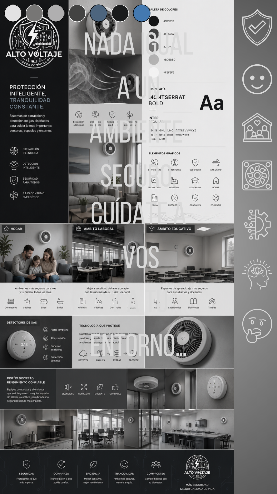
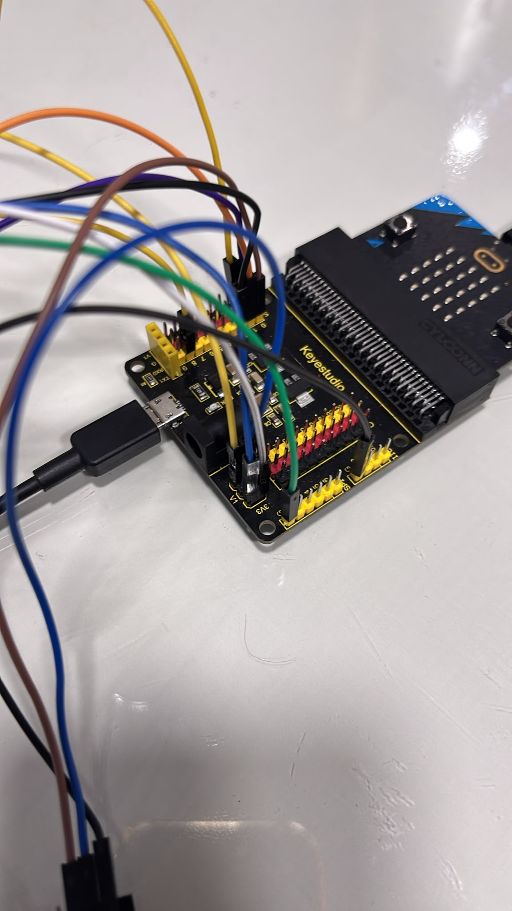
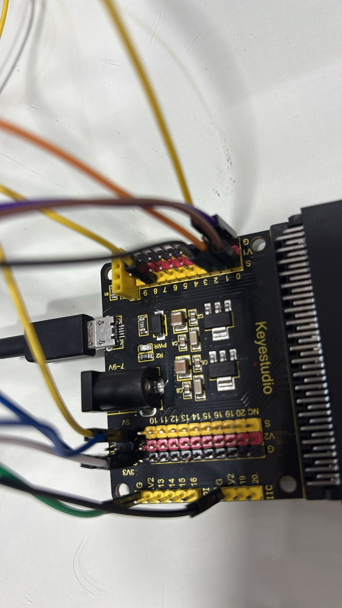
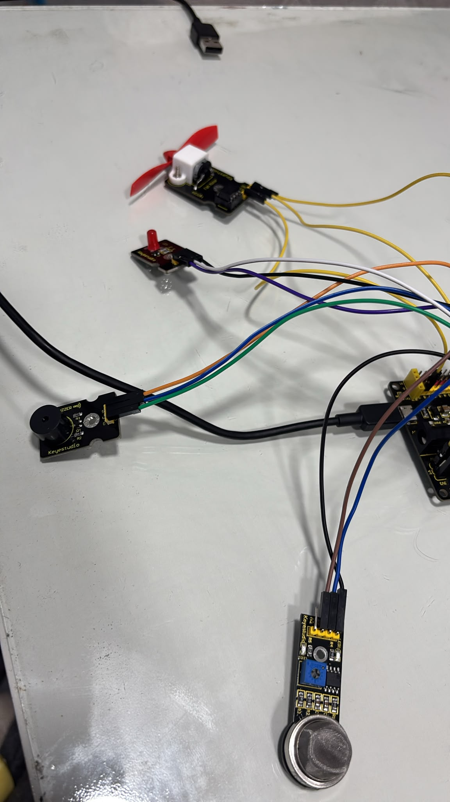

Cypher Scan Sensor

Nada como un ambiente seguro
Nada como un ambiente seguro
Cypher detecta fugas de gas peligrosas en tiempo real y actúa automáticamente. Alerta a las personas cercanas con luz y sonido, y si el nivel es extremo, activa un extractor para sacar el gas de la habitación.
Protege hogares, especialmente a personas mayores, de accidentes y asfixia.


Durante el año identificamos un problema real: las fugas de gas en hogares y ambientes cerrados. Aunque el gas tiene olor, muchas personas no saben cómo reaccionar a tiempo.
Fugas de gas que pueden causar asfixia o accidentes graves si no se detectan y se actúa de inmediato.
Cypher brinda una capa extra de seguridad en las casas, reduce el riesgo de accidentes y da tranquilidad constante a las familias.
Cypher es un sistema inteligente basado en micro:bit y sensor de gas que no solo avisa del peligro, sino que también actúa para despejar el ambiente.
| Componente | Cantidad | Función |
|---|---|---|
| Sensor de gas | 1 | Detecta la presencia y nivel de gas en el aire |
| microbit | 1 | Procesa la información y controla las acciones |
| LED | 1 | Alerta visual cuando se detecta gas |
| Buzzer | 1 | Alerta auditiva cuando se detecta gas |
| Extractor | 1 | Extrae el gas del ambiente en niveles extremos |



En Bloques y JavaScript


In Uruguay, we use gas every day. And every year, gas leaks are reported sometimes even causing houses to catch fire. Gas has an odor so we can notice leaks, but if you're sleeping, distracted, or don't know what to do, that smell isn't enough. When the gas level rises, every second counts.
That's why we created Cypher Scan Sensor,a smart gas sensor connected to a micro:bit that detects gas in the environment in real time. If it detects a leak, it activates an alert with light, sound, or image to warn anyone nearby. And if the gas reaches extreme levels, simply warning people isn't enough: our system automatically activates an extractor that removes the gas from the room.
We built a working prototype with an analog gas sensor, a LED, and a microbit, and we programmed the code ourselves. We tested it and it worked perfectly.
Cypher Scan Sensor: technology at the service of your safety. Because There’s nothing like a safe environment.
SCENE 1 - Hook (0:00-0:12) A: In Uruguay, we use gas every day. B: And every year, gas leaks are reported, and even houses are set on fire because of them. Text on screen: "What if we could warn people before it happens?"
SCENE 2 - The Problem (0:12-0:28) A: Gas has an odor precisely so that we can notice leaks. B: But if you're sleeping, distracted, or don't know what to do, that smell isn't enough. A: And when the gas level rises, every second counts.
SCENE 3 - The Solution (0:28-0:48) B: That's why we created the Smart Gas Sensor. A: A gas sensor connected to a micro:bit that detects gas in the environment. B: If it detects a leak, it activates an alert with light, sound, or an image to warn anyone nearby.
SCENE 4 - Prototype Demonstration (0:48-1:00) A: We built a prototype with an analog gas sensor, a red LED, and a micro:bit, and we programmed the code ourselves. B: We tested it, and it worked perfectly.
SCENE 5 - What's Next (1:00-1:12) A: And we're going further: if the gas reaches extreme levels, simply warning people isn't enough. B: Our next step is to add an extractor that activates automatically and removes the gas from the room.
SCENE 6 - Closing (1:12-1:25) A: Gas is part of our everyday lives, and taking care of ourselves is too. B: Smart Gas Sensor: technology at the service of your safety. A and B: Because prevention is always better than regret!
Imágenes del proceso de creación del proyecto y video de funcionamiento.
.jpeg)
.jpeg)





| Integrante | Rol |
|---|---|
| Facundo Trinidad | programador-diseñador |
| Samir Alial | tester-diseñador |
| Bruno Nuñes | tester-programador |
| Lautaro Pirez | estructurista-diseñador |
| Nahim Dufrechou | estructurista-diseñador |